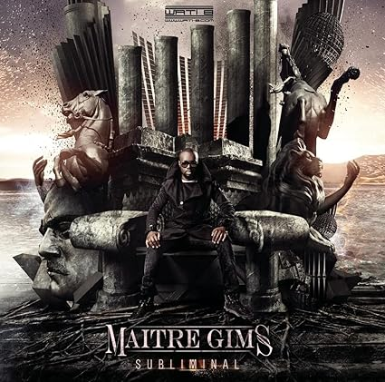

SUBLIMIMAL
L'artist Musicien Gims

Liste des pistes
-
Intro Maître Gims Maître Gims, Stan, 2:49
-
Meurtre par strangulation Maître Gims Maître Gims, Renaud Rebillaud,4:28
-
J'me tire Maître Gims Maître Gims, Renaud Rebillaud,4:10
-
Freedom (feat. H Magnum) Maître Gims, H Mum Maître Gims, Renaud Rebillaud,3:44
-
VQ2PQ Maître Gims Maître Gims, Renaud Rebillaud, Wisla,3:41
-
Ça décoiffe (feat. Black M & Jr O Crom) Maître Gims, Black M, Jr O Crom Maître Gims, Stan,4:37
-
One Shot (feat. Dry) Maître Gims, Dry Maître Gims, Renaud Rebillaud,3:26
-
Où est ton arme (feat. Maska) Maître Gims, Maska Maître Gims, Renaud Rebillaud,4:27
- Maître Gims Maître Gims, Stan,1:40
-
La chute Maître Gims, Renaud Rebillaud Maître Gims, Renaud Rebillau,4:03
-
Ça marche (feat. The Shin Sekaï) Maître Gims, Dadju, Abou Tall Maître Gims, Renaud Rebillaud,3:41
-
Laisse tomber (feat. Dr. Beriz & Insolent) Maître Gims, Dr. Beriz, Insolent Maître Gims, Renaud Rebillaud,4:23
-
À la base Maître Gims, Renaud Rebillaud, Wisla,4:04
-
Pas touché (feat. Pitbull) Maître Gims, Pitbull Maître Gims, Southside,3:39
-
Outsider (feat. Bedjik, Dadju, Xgangs) Maître Gims, Dadju, Xgangs, Bedjik Maître Gims, Stan, 4:59
-
Bella Maître Gims Maître Gims, Renaud Rebillaud,4:10
-
Changer Maître Gims Maître Gims, Renaud Rebillaud,3:30